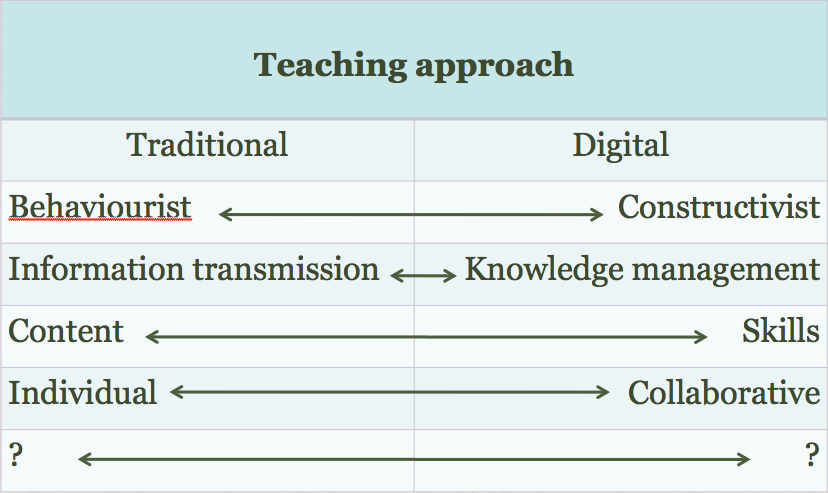
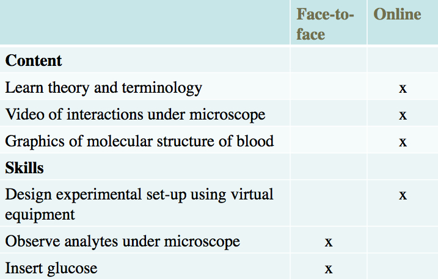

10.4 Escolhendo entre o ensino presencial e o on-line no campus


A análise demográfica dos estudantes apoia a decisão de propor uma disciplina em regime presencial ou inteiramente on-line, contudo revela-se necessário ponderar outras variáveis para definir o que deve transitar para a plataforma on-line e o que deve permanecer no campus no âmbito das disciplinas presenciais, as quais integrarão de forma crescente componentes digitais.
10.4.1 Uma proposta metodológica
10.4.1.1 Identificar uma abordagem assente na experiência prática
Importa explicitar, à partida, a ausência de um corpo teórico ou mesmo de um conjunto de práticas de referência consensualizado para nortear esta escolha. Vige o pressuposto padrão de que o ensino presencial é intrinsecamente superior, recorrendo-se ao digital apenas em última instância. Contudo, na última década, a aprendizagem on-line demonstrou com clareza a viabilidade de lecionar diversas áreas do conhecimento com igual ou superior qualidade no meio digital. Recorrerei, por isso, a exemplos em que se registou uma reflexão intencional para identificar as affordances específicas das diferentes mídias, incluindo o ensino presencial. O domínio em que esta dinâmica se apresenta mais evidente é no ensino das ciências.
Basear-me-ei numa metodologia aplicada originalmente na Open University britânica para o planejamento de disciplinas de ciências a distância na década de 1970. O desafio consistia em determinar o que seria mais adequado realizar por via impressa, na televisão, através de kits de experimentação doméstica e, finalmente, numa semana de atividades práticas laboratoriais presenciais de verão (summer school) no campus de uma universidade convencional. Posteriormente, Dietmar Kennepohl e Lawton Shaw, da Universidade de Athabasca, organizaram uma obra relevante sobre o ensino de ciências on-line (Kennepohl e Shaw, 2010). Adicionalmente, o Consórcio de Faculdades Comunitárias do Colorado (Colorado Community College System) aplicou recentemente sistemas de laboratórios operados remotamente para trabalhos práticos de estudantes, associados a kits domésticos, no ensino de disciplinas introdutórias de ciências on-line (Schmidt e Shea, 2015).
Cada uma destas iniciativas adotou uma metodologia pragmática para determinar o que exige presencialidade e o que pode transitar para o meio digital. O traço comum a estas abordagens residiu na confiança no conhecimento e experiência de especialistas das áreas científicas abertos a analisar a questão sem preconceitos, trabalhando em cooperação com designers instrucionais e técnicos de mídias.
A partir destas práticas, estruturei um processo aplicável para definir a transição para o on-line com base em critérios estritamente pedagógicos, aplicável ao design de uma nova disciplina híbrida. O processo integra cinco etapas:
- identificar a abordagem pedagógica e metodológica requerida;
- identificar os conteúdos principais a cobrir;
- identificar as competências principais a desenvolver;
- analisar os recursos disponíveis;
- identificar o modo de distribuição mais adequado para cada objetivo de aprendizagem estabelecido.
Selecionarei uma área disciplinar ao acaso: a hematologia (estudo do sangue), domínio no qual não sou especialista, para ilustrar como proporia o desenvolvimento do curso em colaboração com um docente da área.

Imagem: CC Wikimedia Commons: National Cancer Institute, EUA

10.4.1.2 Etapa 1: Identificar a abordagem metodológica central
Esta temática foi discutida nos Capítulos 2 a 4, mas delineiam-se os seguintes parâmetros de tomada de decisão:



Este passo deve traduzir-se num plano metodológico que detalhe os métodos pedagógicos a adotar. No caso da hematologia, a docente visa adotar um pendor de cariz construtivista, incentivando os estudantes a desenvolver um posicionamento crítico face aos conteúdos. Pretende, especificamente, articular a disciplina com temas práticos, tais como a segurança no manuseamento e armazenamento de sangue, fatores de contaminação e o desenvolvimento de competências de análise e interpretação de amostras de sangue.
10.4.1.3 Etapa 2: Identificar os conteúdos principais a cobrir
Os conteúdos englobam fatos, dados, hipóteses, teorias, argumentos, evidências e a caraterização de elementos (ex.: visualização ou descrição dos componentes de um equipamento). O que necessitam os estudantes de aprender nesta disciplina? Na hematologia, isto traduzir-se-á na compreensão da composição química do sangue, das suas funções, do circuito de circulação no organismo, na caraterização da biologia celular, na análise de fatores externos que comprometam a sua integridade ou funcionamento, nos princípios dos sistemas de análise e no funcionamento de aparelhos laboratoriais, nas teorias de coagulação, na correlação entre análises sanguíneas e patologias, etc.
Quais são as exigências de apresentação destes conteúdos? Processos dinâmicos exigem explicações detalhadas e a representação cromática de conceitos-chave assume valor acrescentado. A observação microscópica de amostras de sangue sob diversos fatores de ampliação revela-se essencial, exigindo o recurso ao microscópio.
Dispõe-se atualmente de diversos suportes de representação de conteúdos: texto, grafismos, áudio, vídeo e simulações. A título de exemplo, imagens, vídeos curtos ou microfotografias obtidas por microscopia podem ilustrar células sanguíneas sob diferentes estados patológicos. Estes conteúdos encontram-se crescentemente acessíveis na web para fins educativos gratuitos (ver, por exemplo, a biblioteca de vídeos da Sociedade Americana de Hematologia). A produção própria destes materiais acarreta custos mais elevados, mas a sua execução tornou-se acessível com equipamentos digitais de baixo custo. O recurso a um vídeo gravado de uma experiência laboratorial propiciará frequentemente aos estudantes uma visualização superior à obtida na observação presencial em torno de aparelhos de laboratório acanhados.
10.4.1.4 Etapa 3: Identificar as competências principais a desenvolver
As competências definem de que forma os conteúdos serão aplicados e praticados. Isto pode incluir a análise analítica de componentes de sangue, como níveis de glicose e insulina, o manuseamento de equipamentos laboratoriais (quando a proficiência técnica constitui um resultado de aprendizagem pretendido), diagnósticos clínicos, interpretação de resultados mediante hipóteses de causa e efeito baseadas na teoria, resolução de problemas práticos e elaboração de relatórios.
O desenvolvimento de competências por via on-line pode encerrar desafios complexos, em particular quando exige a manipulação física e a sensibilidade táctil para operar dispositivos (o mesmo se aplica a competências que requeiram olfato ou paladar). Na hematologia, as competências requeridas abrangem a capacidade de analisar analitos ou componentes específicos do sangue, interpretar resultados clínicos e sugerir tratamentos. O objetivo consiste em avaliar se estas competências podem igualmente ser desenvolvidas com eficácia no meio digital, o que exige mapear a competência pretendida, definir o modelo de treino prático on-line e conceber o respetivo sistema de avaliação digital.
Consideremos as Etapas 2 e 3 como os objetivos de aprendizagem centrais da disciplina.
10.4.1.5 Etapa 4: Identificar o modo de distribuição mais adequado para cada objetivo
De seguida, estrutura-se uma tabela conforme ilustrado na Figura 10.4.4:



Neste cenário, a docente priorizou a transição de conteúdos para o ambiente on-line, com o objetivo de concentrar o tempo presencial na orientação das atividades práticas e na resolução de dúvidas de teoria e prática. A docente obteve vídeos didáticos sobre as reações sanguíneas essenciais, recolheu grafismos e animações sobre a estrutura molecular do sangue passíveis de adaptação e produziu as suas próprias ilustrações com apoio técnico de design. Constatou que a necessidade de produção de raiz de novos materiais foi reduzida.
O designer instrucional sugeriu a utilização de um software que viabilizava aos estudantes planejarem ensaios laboratoriais virtuais, conjugando aparelhos simulados, parametrização de dados e simulação da experiência. Contudo, identificaram-se competências que exigiam manipulação laboratorial física, tais como a introdução de amostras e a calibração microscópica real. A disponibilização de materiais on-line permitiu à docente rentabilizar as sessões de laboratório.
Este exemplo ilustra que a maior parte dos conteúdos e a competência de planejamento de ensaios laboratoriais podem ser desenvolvidos on-line, mantendo-se a exigência de dinâmicas presenciais para as competências de manipulação física. Esta organização letiva pode traduzir-se em sessões laboratoriais concentradas aos finais de tarde ou fins de semana, ou numa distribuição de 50% de atividades laboratoriais e 50% de aprendizagem on-line.
O desenvolvimento de animações, simulações e laboratórios remotos (remotely operated labs) viabiliza a transição de práticas laboratoriais tradicionais para o on-line. Nem sempre se encontram ferramentas prontas adequadas às necessidades específicas, embora a oferta tenda a registar acréscimos qualitativos e quantitativos. Noutros domínios disciplinares — como nas ciências humanas, ciências sociais ou estudos empresariais —, a transição de processos letivos para o ambiente on-line apresenta menor complexidade técnica.
Trata-se de um método simplificado para ponderar o equilíbrio entre dinâmicas presenciais e digitais na aprendizagem híbrida, constituindo uma abordagem prática de início de planejamento. Estas decisões assentam na intuição pedagógica, no domínio científico da disciplina e na capacidade de conceber soluções pedagógicas digitais. O conhecimento acumulado no ensino on-line demonstra que, na maioria das áreas do saber, parcelas substanciais das competências e conteúdos exigidos podem ser ensinados on-line de forma satisfatória. Deixa de ser sustentável assumir a presencialidade como a opção padrão obrigatória.
Deste modo, cabe a cada formador questionar: se a maior parte do ensino pode transitar para o on-line, quais são as mais-valias específicas da vivência do campus que necessito de integrar nas sessões presenciais? Qual o motivo para ter os estudantes presencialmente diante de mim e de que forma posso rentabilizar esse tempo?
10.4.2 Analisar os recursos disponíveis
A par da caracterização dos estudantes, do modelo pedagógico global e das opções estritamente metodológicas, impõe-se a análise dos recursos disponíveis (parâmetro a ponderar em articulação com as etapas anteriores de planejamento).
10.4.2.1 Tempo de dedicação do docente
O recurso crítico reside no tempo de dedicação do professor ou formador. Requer-se ponderação sobre a melhor aplicação do tempo letivo disponível. A produção própria de vídeos didáticos específicos de procedimentos laboratoriais pode não ser viável face ao tempo a despender na produção ou aos custos de contratação técnica profissional caso estes recursos não se encontrem já disponíveis de forma livre.
O tempo de preparação e adaptação ao ensino on-line constitui um fator relevante. A curva de aprendizagem é acentuada e a primeira experiência letiva on-line exigirá um esforço superior ao das edições subsequentes. A instituição deve disponibilizar formação pedagógica e tecnológica aos docentes que iniciam o percurso no ensino híbrido ou on-line. Idealmente, deveria ser concedida dispensa parcial de serviço letivo para o planejamento e preparação de disciplinas on-line ou híbridas estruturadas de raiz. Embora nem sempre exequível, verifica-se que a carga de trabalho do formador se encontra correlacionada com a qualidade do design pedagógico: disciplinas on-line bem estruturadas exigem menor dedicação administrativa subsequente por parte do professor.
10.4.2.2 Equipes de apoio às tecnologias de aprendizagem
Caso a instituição disponha de gabinetes de desenvolvimento docente, apoio ao ensino, designers instrucionais ou designers web, colabore com estes profissionais. Estas equipes detêm qualificações multidisciplinares em pedagogia e tecnologias, facilitando o planejamento e a docência no meio digital (tema analisado detalhadamente no Capítulo 13).
A existência e qualificação do suporte tecnológico institucional constituem um fator decisivo. Dispõe de apoio de designers instrucionais e técnicos de mídias? Na ausência deste suporte, a tendência passará pela manutenção de modelos maioritariamente presenciais, exceto se o docente detiver experiência consolidada no ensino on-line.
10.4.2.3 Tecnologias implementadas na instituição
A maioria das instituições disponibiliza plataformas de gestão de aprendizagem (LMS) como o Moodle ou o Blackboard, bem como sistemas de gravação de aulas. Contudo, os docentes necessitarão crescentemente de suporte de produção de mídias para criar vídeos, grafismos digitais, simulações ou páginas web, associado a ferramentas de blogs e wikis. A ausência deste suporte tecnológico induz os docentes a manterem-se nos modelos presenciais convencionais.
10.4.2.4 Colegas com experiência no ensino híbrido e on-line
A colaboração com colegas do mesmo departamento dotados de experiência no ensino digital e na disciplina assume relevância. Estes profissionais podem partilhar metodologias ou disponibilizar materiais já desenvolvidos (como grafismos ou recursos digitais).
10.4.2.5 Recursos financeiros
Estão previstos recursos para apoiar a dispensa de tempo letivo (buy-out) para tarefas de design pedagógico? Diversas instituições dispõem de fundos internos de apoio à inovação no ensino e na aprendizagem, existindo igualmente apoios externos direcionados para a concepção de recursos educacionais abertos, fatores que impulsionam a transição de dinâmicas letivas para o meio digital.
A disponibilidade destes recursos delimita o grau de sofisticação tecnológica e de qualidade que será viável alcançar na transição para o on-line. Pondere a viabilidade de avançar para modelos digitais caso a instituição não assegure os suportes descritos.
10.4.3 O cenário de múltiplas modalidades
A segmentação de públicos-alvo para disciplinas específicas apresenta-se cada vez mais complexa. Embora a maioria das turmas de primeiro ano universitário integre jovens vindos do ensino secundário, verificam-se perfis diversos. Coexiste uma percentagem de estudantes que transitou diretamente para o mercado de trabalho ou frequentou cursos de ensino profissional e técnico que procura atualmente a obtenção do grau acadêmico. Em programas de pós-graduação profissional, as turmas combinam recém-licenciados com profissionais no ativo. Em turmas de final de curso, coabitam estudantes em regime de dedicação exclusiva com alunos que trabalham mais de 15 horas semanais (Marshall, 2010). Em termos teóricos, seria viável categorizar disciplinas em função dos públicos predominantes; na prática, contudo, a maioria das turmas apresenta heterogeneidade de perfis e necessidades.
Admitindo que o modelo híbrido representará a tendência estrutural de organização das disciplinas, cumpre conceber o planejamento letivo de modo a responder a esta diversidade de públicos. A título de exemplo, a disciplina de hematologia descrita pode dirigir-se a estudantes de licenciatura em biologia em regime de dedicação exclusiva, ou ser adaptada, isoladamente ou em articulação com outras disciplinas, sob a forma de especialização em gestão sanguínea para profissionais de enfermagem nos hospitais. Revelar-se-ia igualmente útil para estudantes de medicina sem formação prévia na área, ou para pacientes com patologias hematológicas associadas a parâmetros específicos, como a diabetes.
Se a docente estruturar uma disciplina organizada em 50% de atividades on-line e 50% presenciais no campus, será viável adaptá-la para múltiplos públicos: as atividades de enfermagem laboratoriais seriam supervisionadas em contexto hospitalar, e a componente digital adaptada sob a forma de um MOOC curto direcionado para esclarecimento de pacientes. Em determinadas áreas disciplinares, torna-se exequível oferecer o mesmo curso sob modalidades distintas: totalmente on-line, híbrida ou presencial, alargando o alcance a públicos diversos.
10.4.4 Questões para orientação na escolha do modo de distribuição
Em síntese, sugerem-se as seguintes perguntas de reflexão no design letivo de raiz:
- Quem são os potenciais estudantes desta disciplina? Quais as suas necessidades? Qual modo de distribuição responderá melhor a estes perfis? Posso atrair novos públicos mediante a escolha de uma determinada modalidade letiva?
- Qual é a minha concepção sobre como os estudantes aprendem nesta disciplina? Quais os métodos de ensino que prefiro adotar para facilitar essa dinâmica?
- Quais os conteúdos centrais (fatos, teorias, processos, dados) a cobrir? De que forma avaliarei a consolidação destes conhecimentos?
- Quais as competências principais a desenvolver pelos estudantes? De que forma os alunos praticarão e consolidarão estas competências? De que forma as avaliarei?
- De que forma a tecnologia pode apoiar a apresentação dos conteúdos da disciplina?
- De que forma a tecnologia pode apoiar o desenvolvimento de competências na disciplina?
- Ao listar conteúdos e competências, quais deles podem ser ensinados:
- totalmente on-line
- em regime misto (on-line e presencial)
- apenas por via exclusivamente presencial?
- De quais recursos de suporte disponho para esta disciplina no que concerne a:
- apoio profissional de designers instrucionais e técnicos de mídias;
- fontes de financiamento para dispensa de tempo letivo e produção de recursos;
- recursos educacionais abertos (REA) com padrões de qualidade?
- Que tipo de espaço físico de sala de aula necessitarei para ensinar de acordo com a metodologia pretendida? É viável adaptar os espaços existentes ou requerem-se alterações estruturais prévias na instituição?
- À luz das respostas dadas, qual o modo de distribuição que se apresenta mais consistente?
Referências
Kennepohl, D. and Shaw, L. (eds.) (2010) Accessible Elements: Teaching Science Online and at a Distance Athabasca AB: Athabasca University Press
Schmidt, S. and Shea, P. (2015) NANSLO Web-based Labs: Real Equipment, Real Data, Real People! WCET Frontiers
Atividade 10.4 Decidindo sobre o modo de distribuição
- Experimente aplicar o processo descrito no planejamento de uma nova disciplina ou na revisão e reformulação de uma disciplina que lecione atualmente.
Não é disponibilizado feedback para esta atividade.